Snow reports
Daily snow reports for skiers: where the snow is, what is coming and where to ski, from the SnowScope snow map and measuring stations. Every number comes from that day's data.
English · Français · Deutsch · Italiano · Español · الدارجة · Svenska · Norsk · Suomi · Slovenščina · Català · Português · Polski · Čeština · Slovenčina · Magyar · Română · Українська · Български · Srpski · Bosanski · Hrvatski · Crnogorski · Македонски · Shqip · Ελληνικά

Montenegro snow today, 17 November: snow cover, new snow, snow depth by height, the next days and the best resorts.
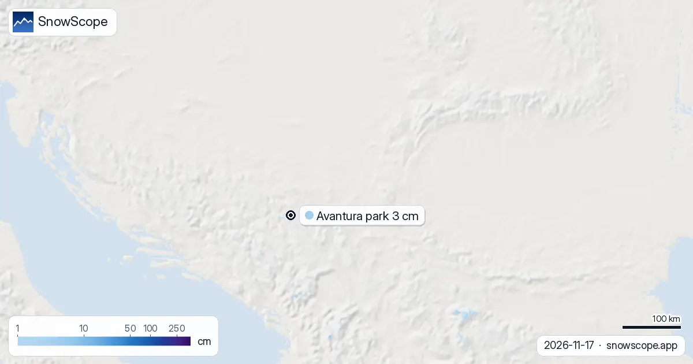
Serbia snow today, 17 November: snow cover, new snow, snow depth by height, the next days and the best resorts.
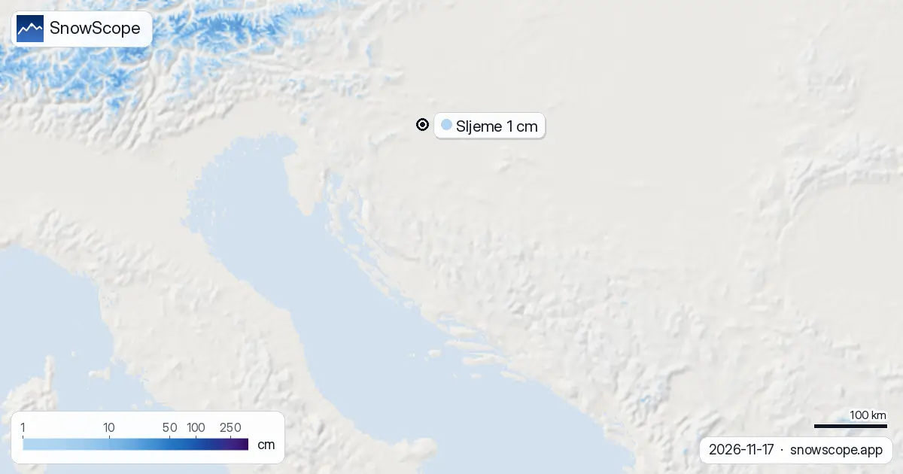
Croatia snow today, 17 November: snow cover, new snow, snow depth by height, the next days and the best resorts.
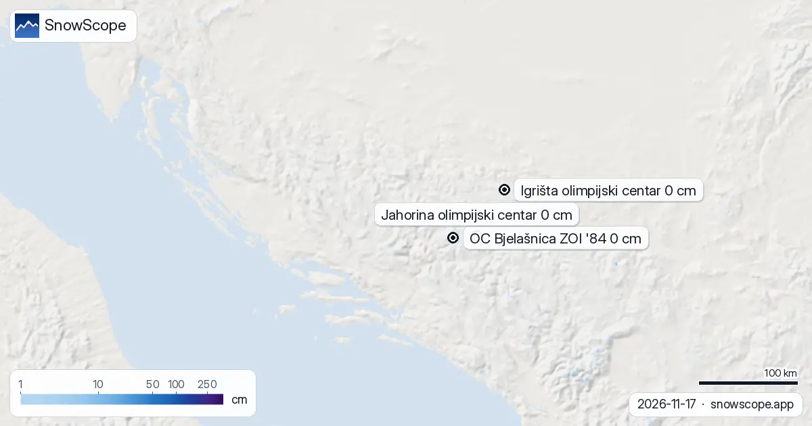
Bosnia and Herzegovina snow today, 17 November: snow cover, new snow, snow depth by height, the next days and the best resorts.

Albania snow today, 17 November: snow cover, new snow, snow depth by height, the next days and the best resorts.

North Macedonia snow today, 17 November: snow cover, new snow, snow depth by height, the next days and the best resorts.

Les Grands Montets saw 74 cm of new snow in the last 72 hours, with more forecast for the coming days, according to our model on November 17, 2026.
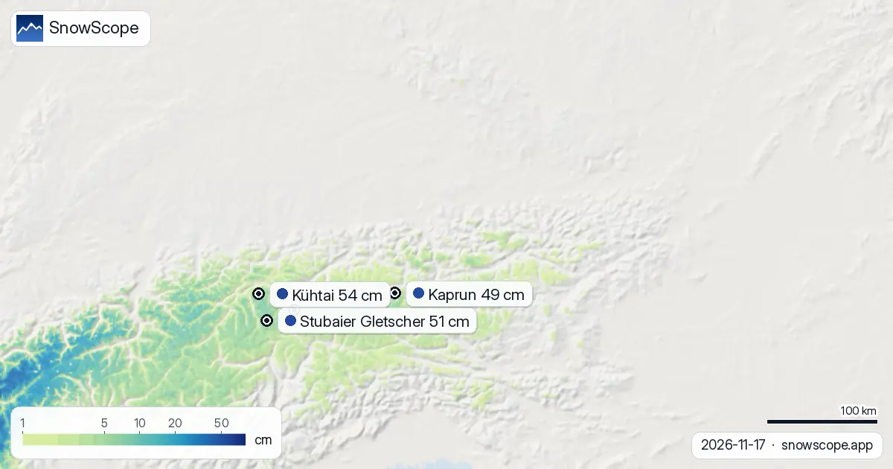
Austria snow today, 17 November: snow cover, new snow, snow depth by height, the next days and the best resorts.
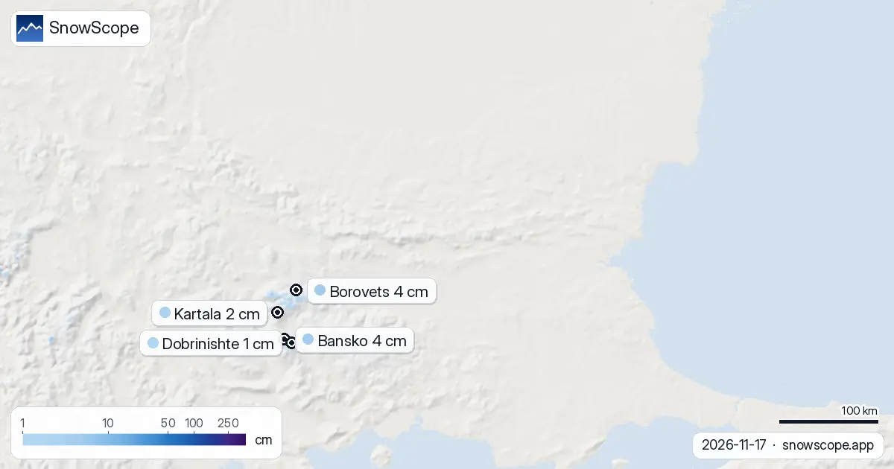
Bulgaria snow today, 17 November: snow cover, new snow, snow depth by height, the next days and the best resorts.

Finland snow today, 17 November: snow cover, new snow, snow depth by height, the next days and the best resorts.

France snow today, 17 November: snow cover, new snow, snow depth by height, the next days and the best resorts.

Snow at the UK's favourite Alpine resorts on 17 November: snow depth on the upper slopes, fresh snow, the next three days and the pick for a short trip.
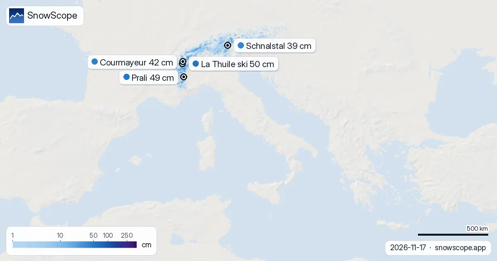
Italy snow today, 17 November: snow cover, new snow, snow depth by height, the next days and the best resorts.

Norway snow today, 17 November: snow cover, new snow, snow depth by height, the next days and the best resorts.
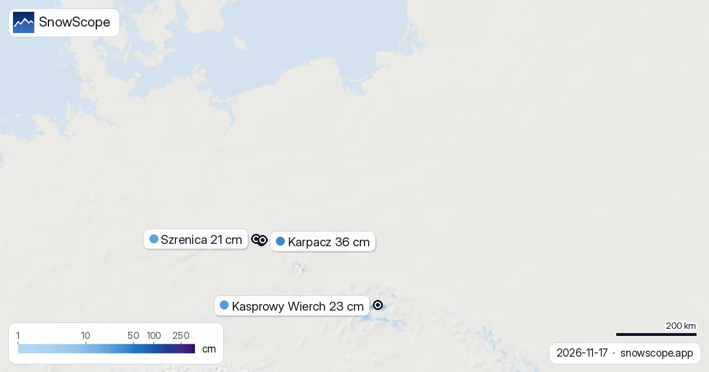
Poland snow today, 17 November: snow cover, new snow, snow depth by height, the next days and the best resorts.

Romania snow today, 17 November: snow cover, new snow, snow depth by height, the next days and the best resorts.

Slovakia snow today, 17 November: snow cover, new snow, snow depth by height, the next days and the best resorts.

Sweden snow today, 17 November: snow cover, new snow, snow depth by height, the next days and the best resorts.

Switzerland snow today, 17 November: snow cover, new snow, snow depth by height, the next days and the best resorts.

UK snow today, 17 November: snow cover, new snow, snow depth by height, the next days and the best resorts.

Ukraine snow today, 17 November: snow cover, new snow, snow depth by height, the next days and the best resorts.

Andorra snow today, 17 November: snow cover, new snow, snow depth by height, the next days and the best resorts.
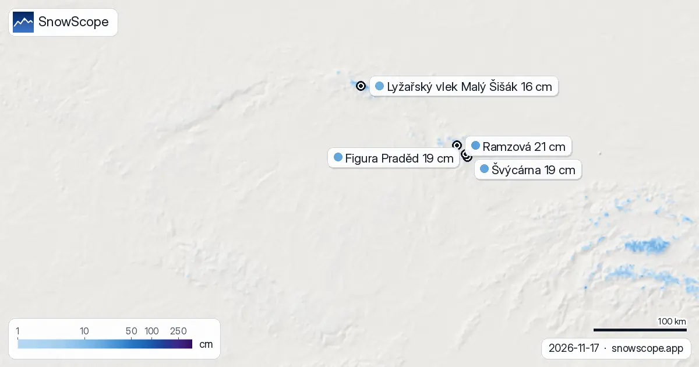
Czechia snow today, 17 November: snow cover, new snow, snow depth by height, the next days and the best resorts.

Slovenia snow today, 17 November: snow cover, new snow, snow depth by height, the next days and the best resorts.

Germany snow today, 17 November: snow cover, new snow, snow depth by height, the next days and the best resorts.

Kosovo snow today, 17 November: snow cover, new snow, snow depth by height, the next days and the best resorts.

The daily ranking: most new snow forecast for the next 24 hours and until 20 November, in Europe, Morocco and North America, snow line included. The …

Les Arcs snow forecast: up to 96 cm expected by 19 November (Alps). At Orelle, the freezing level reaches 2,730 m to 3,020 m on 17 November, so the …

The two-week picture in the US West, 17 November to 30 November, drawn from the two global models that reach two weeks, ECMWF and GFS. Middle of the …

Whistler Blackcomb saw 76 cm of new snow in the last 72 hours, with Mount Cain Alpine Park also receiving 64 cm, as of November 16, 2026.

Albania snow today, 16 November: snow cover, new snow, snow depth by height, the next days and the best resorts.

Andorra snow today, 16 November: snow cover, new snow, snow depth by height, the next days and the best resorts.

Austria snow today, 16 November: snow cover, new snow, snow depth by height, the next days and the best resorts.

Bosnia and Herzegovina snow today, 16 November: snow cover, new snow, snow depth by height, the next days and the best resorts.

Bulgaria snow today, 16 November: snow cover, new snow, snow depth by height, the next days and the best resorts.

Croatia snow today, 16 November: snow cover, new snow, snow depth by height, the next days and the best resorts.
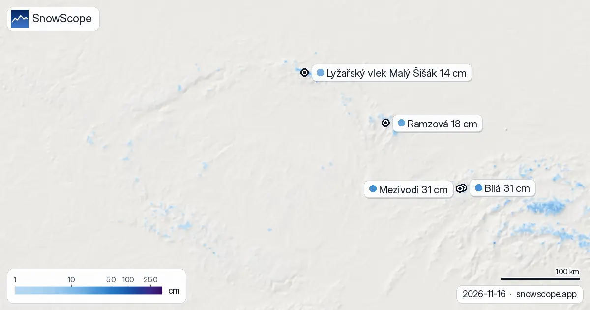
Czechia snow today, 16 November: snow cover, new snow, snow depth by height, the next days and the best resorts.

Finland snow today, 16 November: snow cover, new snow, snow depth by height, the next days and the best resorts.

France snow today, 16 November: snow cover, new snow, snow depth by height, the next days and the best resorts.
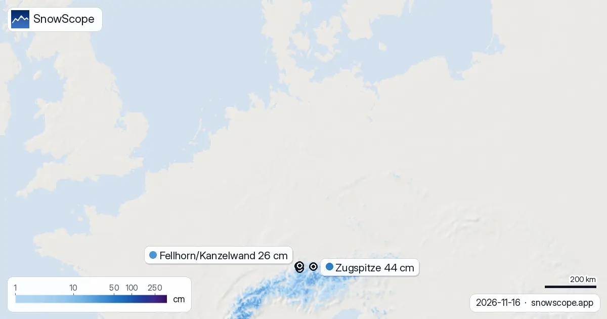
Germany snow today, 16 November: snow cover, new snow, snow depth by height, the next days and the best resorts.

Greece snow today, 16 November: snow cover, new snow, snow depth by height, the next days and the best resorts.

Hungary snow today, 16 November: snow cover, new snow, snow depth by height, the next days and the best resorts.

Ireland snow today, 16 November: snow cover, new snow, snow depth by height, the next days and the best resorts.

Italy snow today, 16 November: snow cover, new snow, snow depth by height, the next days and the best resorts.

Kosovo snow today, 16 November: snow cover, new snow, snow depth by height, the next days and the best resorts.

Montenegro snow today, 16 November: snow cover, new snow, snow depth by height, the next days and the best resorts.

North Macedonia snow today, 16 November: snow cover, new snow, snow depth by height, the next days and the best resorts.

Norway snow today, 16 November: snow cover, new snow, snow depth by height, the next days and the best resorts.

Poland snow today, 16 November: snow cover, new snow, snow depth by height, the next days and the best resorts.

Portugal snow today, 16 November: snow cover, new snow, snow depth by height, the next days and the best resorts.

Romania snow today, 16 November: snow cover, new snow, snow depth by height, the next days and the best resorts.

Snow in Scandinavia on 16 November: Breimsbygda Skisenter about 50 cm on the upper slopes, 332 of 423 resorts with snow, and what is coming next.
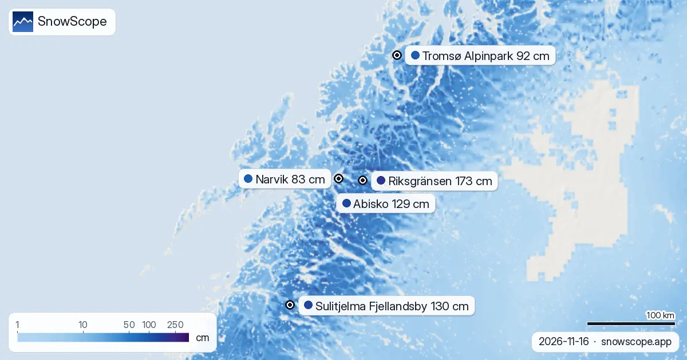
Snow in Scandinavia on 16 November: Riksgränsen about 173 cm on the upper slopes, 332 of 423 resorts with snow, and what is coming next.

Serbia snow today, 16 November: snow cover, new snow, snow depth by height, the next days and the best resorts.

Slovakia snow today, 16 November: snow cover, new snow, snow depth by height, the next days and the best resorts.

Slovenia snow today, 16 November: snow cover, new snow, snow depth by height, the next days and the best resorts.

Spain snow today, 16 November: snow cover, new snow, snow depth by height, the next days and the best resorts.

Sweden snow today, 16 November: snow cover, new snow, snow depth by height, the next days and the best resorts.

Switzerland snow today, 16 November: snow cover, new snow, snow depth by height, the next days and the best resorts.

UK snow today, 16 November: snow cover, new snow, snow depth by height, the next days and the best resorts.

Ukraine snow today, 16 November: snow cover, new snow, snow depth by height, the next days and the best resorts.

Sestriere snow forecast for 23–29 November 2026: 30 cm at the top (15–44 cm), 25 cm at the base, snowiest day Wednesday 25 November, with neighbours compared.

Madonna di Campiglio snow forecast for 23–29 November 2026: 27 cm at the top (8–46 cm), 23 cm at the base, snowiest day Wednesday 25 November, with neighbours compared.
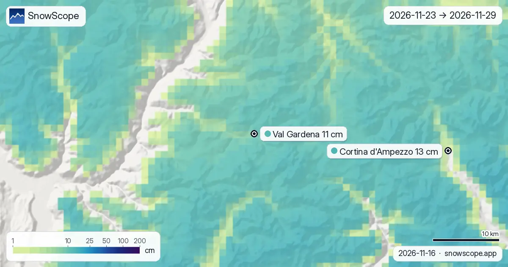
Val Gardena snow forecast for 23–29 November 2026: 11 cm at the top (5–18 cm), 6 cm at the base, snowiest day Wednesday 25 November, with neighbours compared.

Next week's fresh snow in Cortina d'Ampezzo: 5–21 cm on the upper slopes and 0–1 cm at the base (23–29 November 2026), best day, best slopes and how sure the forecast is.

Livigno snow forecast for 23–29 November 2026: 19 cm at the top (6–31 cm), 16 cm at the base, snowiest day Wednesday 25 November, with neighbours compared.

Next week's fresh snow in Courmayeur: 8–44 cm on the upper slopes and 5–28 cm at the base (23–29 November 2026), best day, best slopes and how sure the forecast is.

Cervinia snow forecast for 23–29 November 2026: 23 cm at the top (6–41 cm), 19 cm at the base, snowiest day Thursday 26 November, with neighbours compared.

Saalbach snow forecast for 23–29 November 2026: 17 cm at the top (3–31 cm), 8 cm at the base, snowiest day Sunday 29 November, with neighbours compared.

Stubai Glacier snow forecast for 23–29 November 2026: 14 cm at the top (2–25 cm), 12 cm at the base, snowiest day Thursday 26 November, with neighbours compared.
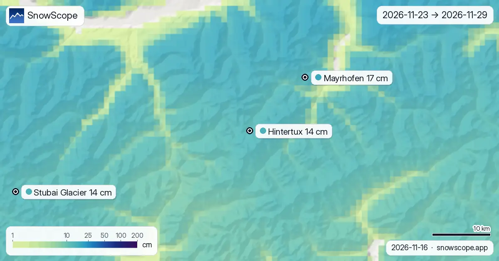
Hintertux snow forecast for 23–29 November 2026: 14 cm at the top (3–24 cm), 12 cm at the base, snowiest day Wednesday 25 November, with neighbours compared.

Mayrhofen snow forecast for 23–29 November 2026: 17 cm at the top (2–31 cm), 1 cm at the base, snowiest day Sunday 29 November, with neighbours compared.

Next week's fresh snow in Kitzbühel: 3–34 cm on the upper slopes and 2–14 cm at the base (23–29 November 2026), best day, best slopes and how sure the forecast is.

Next week's fresh snow in Obergurgl: 3–23 cm on the upper slopes and 2–20 cm at the base (23–29 November 2026), best day, best slopes and how sure the forecast is.

Sölden snow forecast for 23–29 November 2026: 13 cm at the top (2–24 cm), 8 cm at the base, snowiest day Thursday 26 November, with neighbours compared.

Next week's fresh snow in Lech-Zürs: 7–53 cm on the upper slopes and 6–48 cm at the base (23–29 November 2026), best day, best slopes and how sure the forecast is.

Ischgl snow forecast for 23–29 November 2026: 18 cm at the top (3–34 cm), 14 cm at the base, snowiest day Thursday 26 November, with neighbours compared.

St. Anton snow forecast for 23–29 November 2026: 25 cm at the top (5–45 cm), 18 cm at the base, snowiest day Sunday 29 November, with neighbours compared.

Next week's fresh snow in Andermatt: 3–38 cm on the upper slopes and 3–28 cm at the base (23–29 November 2026), best day, best slopes and how sure the forecast is.

Next week's fresh snow in Saas-Fee: 6–37 cm on the upper slopes and 5–30 cm at the base (23–29 November 2026), best day, best slopes and how sure the forecast is.

Engelberg snow forecast for 23–29 November 2026: 22 cm at the top (2–42 cm), 7 cm at the base, snowiest day Thursday 26 November, with neighbours compared.

Next week's fresh snow in Laax: 4–38 cm on the upper slopes and 1–10 cm at the base (23–29 November 2026), best day, best slopes and how sure the forecast is.

Next week's fresh snow in Davos: 4–27 cm on the upper slopes and 2–8 cm at the base (23–29 November 2026), best day, best slopes and how sure the forecast is.

St. Moritz snow forecast for 23–29 November 2026: 19 cm at the top (5–33 cm), 16 cm at the base, snowiest day Wednesday 25 November, with neighbours compared.

Verbier snow forecast for 23–29 November 2026: 24 cm at the top (5–42 cm), 9 cm at the base, snowiest day Thursday 26 November, with neighbours compared.

Next week's fresh snow in Zermatt: 7–39 cm on the upper slopes and 4–27 cm at the base (23–29 November 2026), best day, best slopes and how sure the forecast is.

Next week's fresh snow in Megève: 9–46 cm on the upper slopes and 1–2 cm at the base (23–29 November 2026), best day, best slopes and how sure the forecast is.

Next week's fresh snow in Flaine: 9–46 cm on the upper slopes and 8–45 cm at the base (23–29 November 2026), best day, best slopes and how sure the forecast is.

Avoriaz snow forecast for 23–29 November 2026: 29 cm at the top (9–48 cm), 17 cm at the base, snowiest day Wednesday 25 November, with neighbours compared.

Next week's fresh snow in Serre Chevalier: 25–68 cm on the upper slopes and 8–28 cm at the base (23–29 November 2026), best day, best slopes and how sure the forecast is.

Next week's fresh snow in La Grave: 23–74 cm on the upper slopes and 7–39 cm at the base (23–29 November 2026), best day, best slopes and how sure the forecast is.

Next week's fresh snow in Les 2 Alpes: 20–73 cm on the upper slopes and 4–22 cm at the base (23–29 November 2026), best day, best slopes and how sure the forecast is.
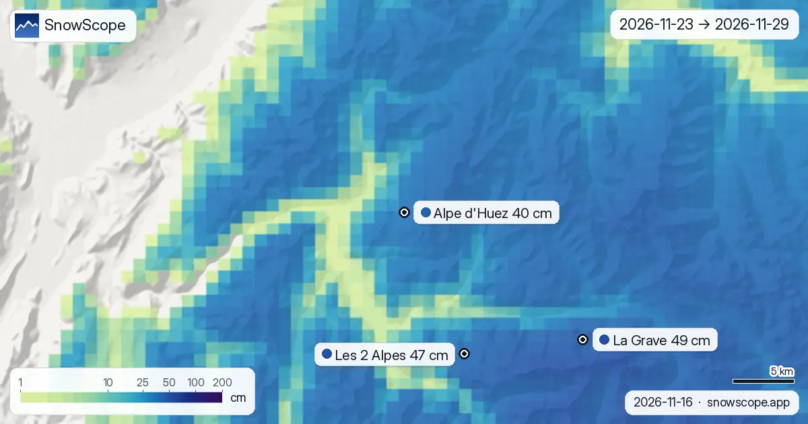
Alpe d'Huez snow forecast for 23–29 November 2026: 40 cm at the top (18–62 cm), 10 cm at the base, snowiest day Wednesday 25 November, with neighbours compared.

La Plagne snow forecast for 23–29 November 2026: 28 cm at the top (11–45 cm), 17 cm at the base, snowiest day Thursday 26 November, with neighbours compared.

Les Arcs snow forecast for 23–29 November 2026: 29 cm at the top (11–48 cm), 12 cm at the base, snowiest day Thursday 26 November, with neighbours compared.

Méribel snow forecast for 23–29 November 2026: 28 cm at the top (13–44 cm), 19 cm at the base, snowiest day Wednesday 25 November, with neighbours compared.

Next week's fresh snow in Courchevel: 12–42 cm on the upper slopes and 4–30 cm at the base (23–29 November 2026), best day, best slopes and how sure the forecast is.

Next week's fresh snow in Val Thorens: 13–46 cm on the upper slopes and 11–39 cm at the base (23–29 November 2026), best day, best slopes and how sure the forecast is.

Next week's fresh snow in Tignes: 11–48 cm on the upper slopes and 8–38 cm at the base (23–29 November 2026), best day, best slopes and how sure the forecast is.

Val d'Isère snow forecast for 23–29 November 2026: 28 cm at the top (10–46 cm), 24 cm at the base, snowiest day Thursday 26 November, with neighbours compared.

Chamonix snow forecast for 23–29 November 2026: 27 cm at the top (8–46 cm), 14 cm at the base, snowiest day Wednesday 25 November, with neighbours compared.

How much snow will the mountains gain? Our table shows the resorts with the most new snow forecast for the next 24 hours and until 19 November, in …

Is there more snow than a year ago? We compared today with 15 November last winter at 4 resorts in Western Canada: 2 of them have more snow now, …

The early-winter snowpack in the Alps is building unevenly, and height makes all the difference. Today the deepest snow in the Alps is at La Grave …

Is there snow in the Atlas today? There is no snow on the Atlas ski slopes today. Snow is stored only on the highest summits: about 20 km² of ground, …

The snow has pulled back since 13 November, from 6,880 sq mi (17,820 km²) to 6,039 sq mi (15,640 km²) today; for 18 November our forecast gives …

2 of 4: that is how many resorts in the US Northeast are clearly above normal today. How does this winter look so far? We set today's snow at 4 …

Snow-covered area: 258,160 km² on 13 November, 253,880 km² today, 298,900 km² forecast for 18 November. The map is getting less white. Three inputs, …

Pyrenees snow report, 15 November. Mixed rain and snow: snow is expected only up high, about 7–19 cm near the top of Cauterets Cirque du Lys …

Big White snow depth: a 99 cm cover on the upper slopes (15 November). The early-winter snowpack in Western Canada is building unevenly, and height …
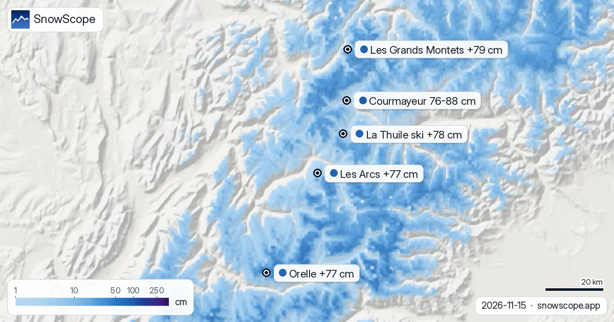
Les Grands Montets: how much snow is coming? 73–79 cm by 18 November. How much snow is coming in the Alps, and where? Mixed rain and snow: snow is …
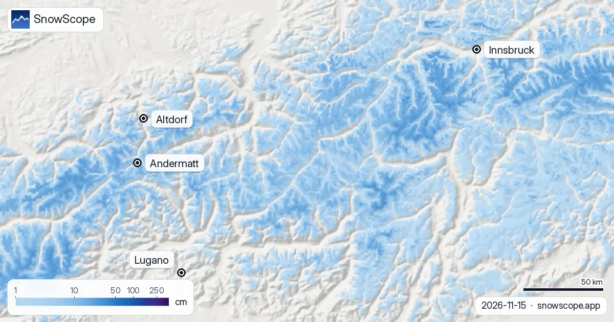
At Andermatt (2963 m) the forecast gives 75 mm of precipitation from 15 November to 20 November. During the wet hours the 0 °C level stands near 2160
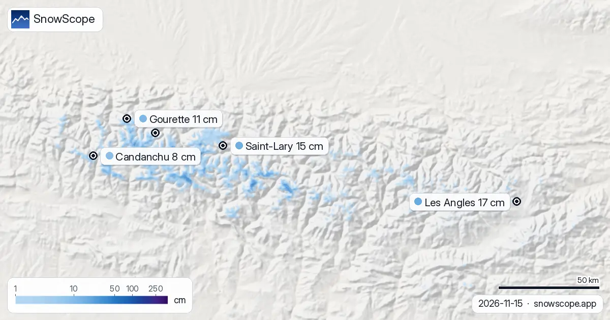
Read the snow in the Pyrenees today and you get fresh powder, thin early-season snow and warm air that can leave a crust. So here is the kit list, …

Picking a resort in the US Northeast comes down to three things: how deep the snow is, how fresh it is, and what is still to come. We weighed the …

Les Deux Alpes: how much fresh snow fell? 38 cm in 72 hours (15 November). Where did the most fresh snow fall in the Alps? La Grave got 41 cm of new …

Manning Park Resort: 11 cm of fresh snow in 72 hours (Western Canada, 15 November). Whistler Blackcomb got 82 cm of new snow in the last 72 hours, …

Our forecast for November 15, 2026, shows Courmayeur in Italy leading Europe with 88 cm of new snow expected by Wednesday.

Beaver Mountain charges one $75 adult day price for 2026-27. Our snow history says early December is a coin flip there; the week before Christmas is far safer.

Bridger Bowl's 2026/27 adult ticket is $86 online, $99 at the window. Our history says mid-December is a coin flip at mid-mountain; late December is safer.